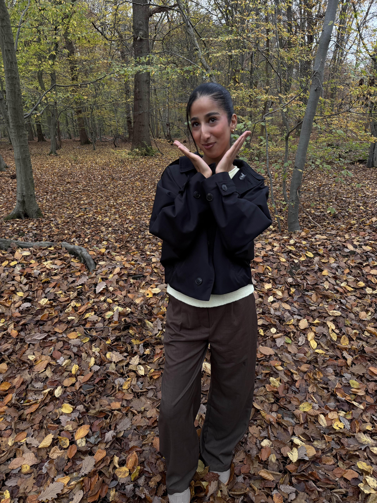

Je suis étudiante en BTS Services Informatiques aux Organisations, option SISR (Solutions d'Infrastructure, Systèmes et Réseaux), en alternance au Technicentre SNCF de Sotteville-lès-Rouen.
Mon parcours atypique — de la biologie aux maths, puis à l'informatique — m'a appris à apprendre vite, à m'adapter et à aborder les problèmes techniques avec rigueur et méthode.
Je m'intéresse particulièrement à la cybersécurité, à l'administration systèmes et réseaux et à la virtualisation. Mon objectif est d'intégrer une école d'ingénieurs en alternance pour approfondir ces domaines.
BTS SIO – Option SISR
École IRIS, Rouen (2024–2026)
Technicentre SNCF
Sotteville-lès-Rouen
Cybersécurité, virtualisation,
administration système & réseau
Intégrer une école d'ingénieurs
informatique en alternance